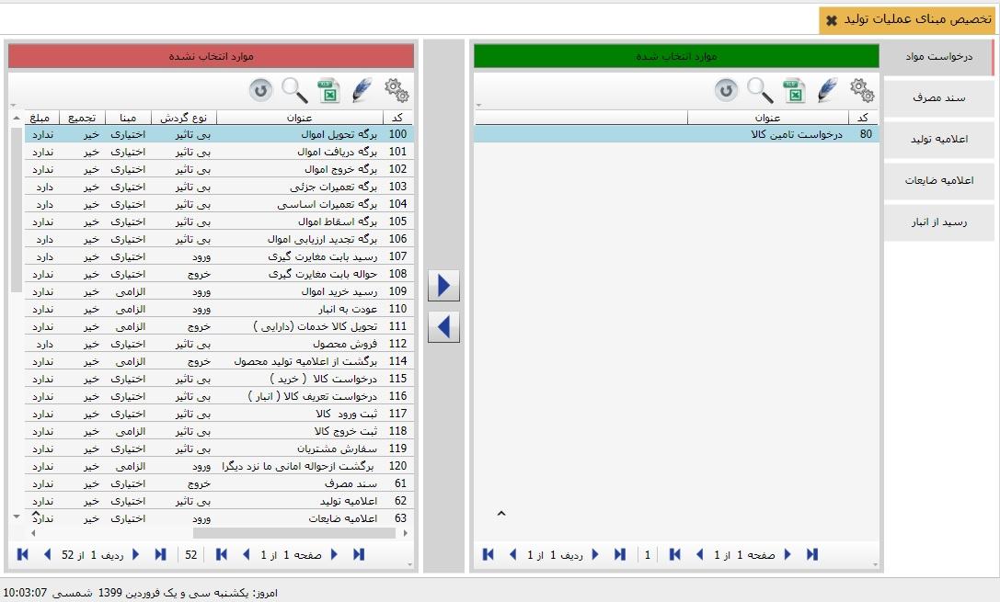

هر عملیات تولید می تواند بر مبنای عملیات دیگری صادر شود. برای تعیین مبناهای عملیات، منوی « تخصیص مبنای عملیات تولید» را از قسمت « اطلاعات پایه و عملیات» انتخاب کنید:
هنگامی که یک عملیات مبنای عملیات دیگری می شود می توانیم عملیاتی را بر اساس یک عملیات دیگر صادر کنیم که این امر به کنترل موجودی نیز کمک می کند، برای تخصیص مبنا ابتدا از لیست سمت راست عملیات تولید مورد نظر را انتخاب کنید سپس از لیست سمت چپ عملیات مد نظر را انتخاب کنید و با استفاده از فلش راست گرد عملیات را به سمت راست منتقل فرمایید و برای خارج کردن از تخصیص از لیست سمت راست عملیات را انتخاب کنید و با استفاده از فلش چپ گرد عملیات را به سمت چپ باز گردانید. در فرم صدور سند تولید با انتخاب یک عملیات اگر آن عملیات مبنا داشته باشد، مبناهای آن عملیات در پنجره ای جداگانه به شما نشان داده می شود تا شما سند مبنای مورد نظر را انتخاب کنید.